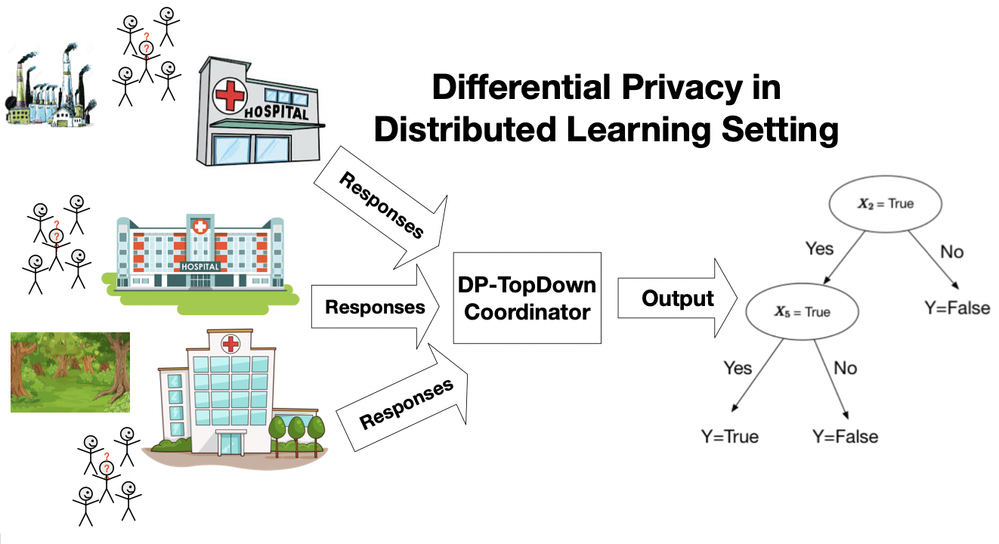
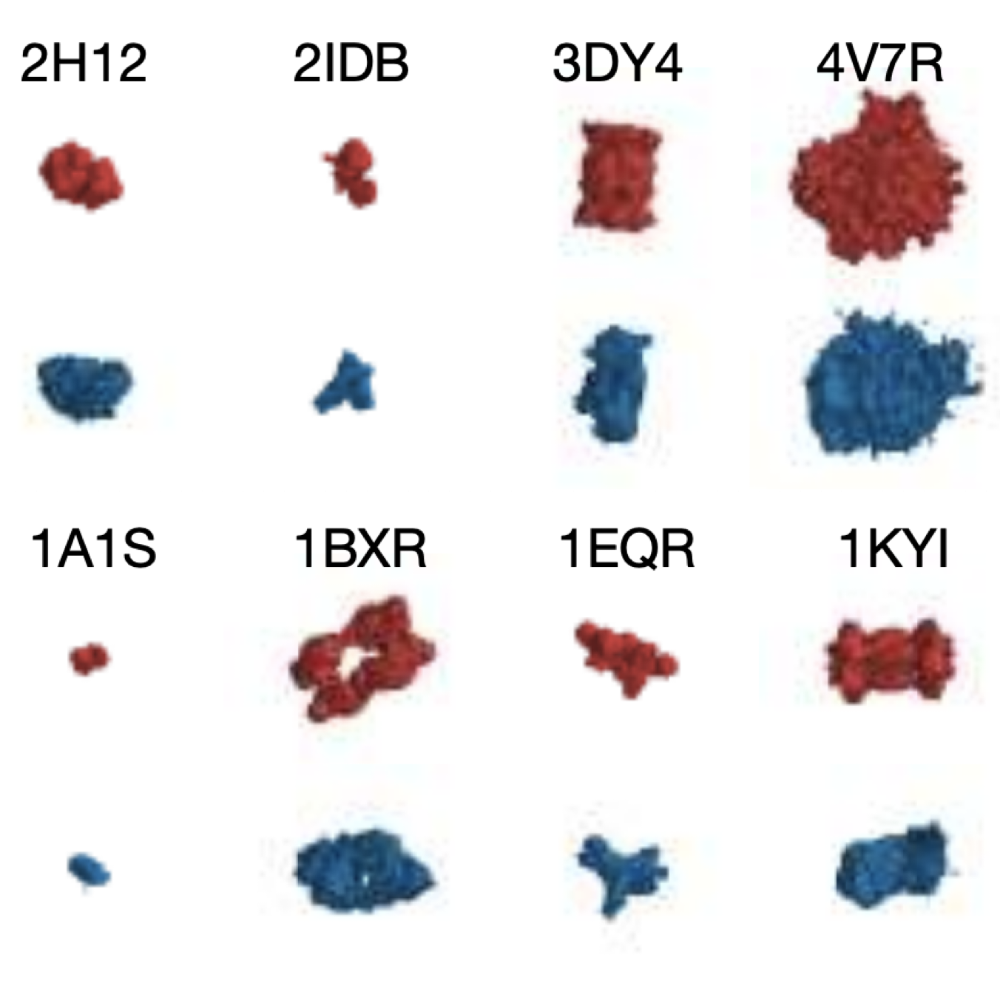
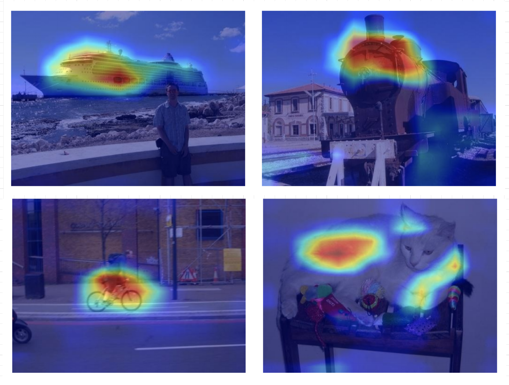
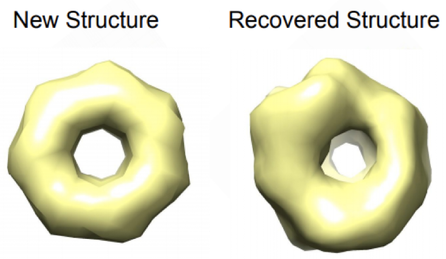
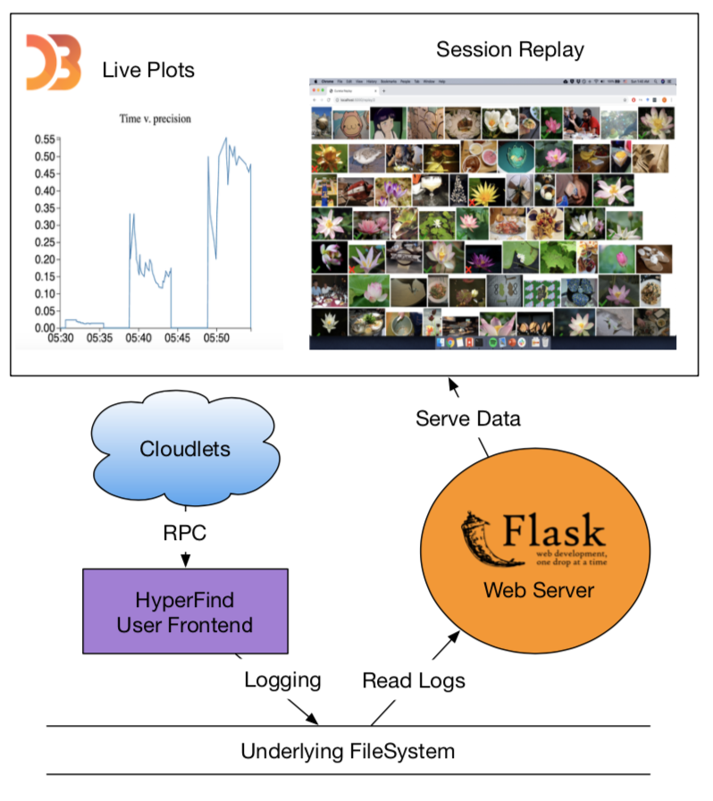
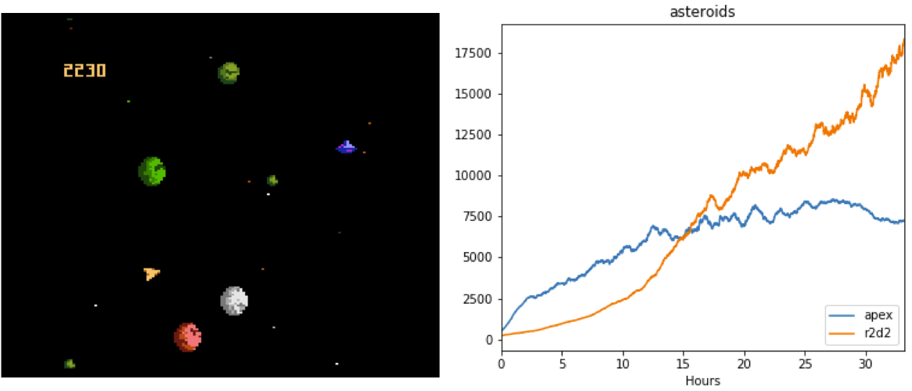
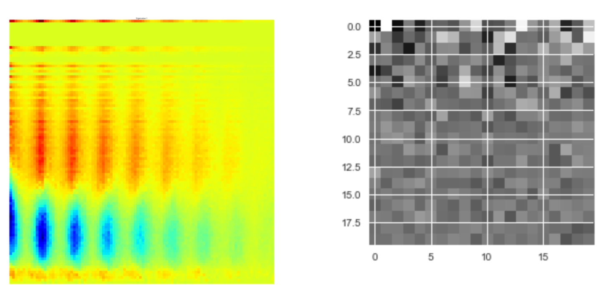
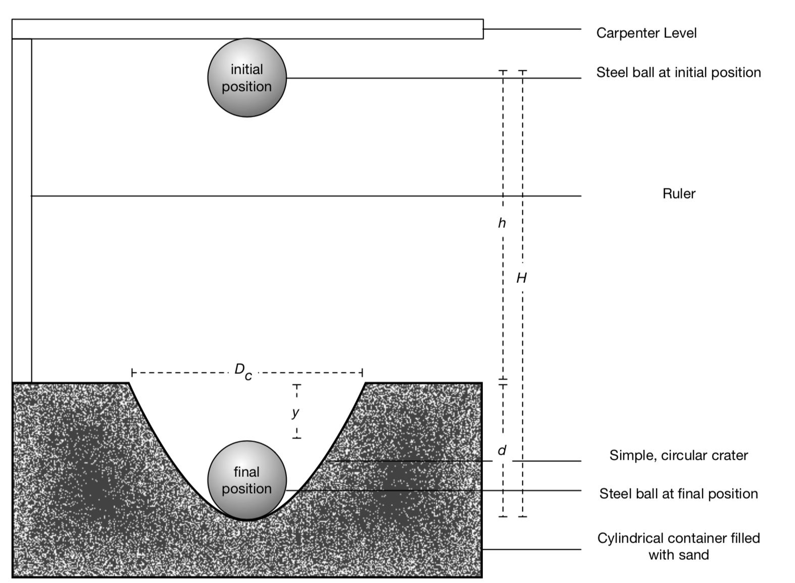

I graduated with University Honors from Carnegie Mellon University, where I studied Computer Science and Mathematics with a focus on machine learning and systems. I am extremely grateful to have worked with Professors Min Xu, Nina Balcan, and Satya.
I am broadly interested in developing data-driven algorithms adhering to social values, with immediate real-world applications, such as in healthcare, robotic autonomy, Human-in-the-Loop Computing, and sustainability for a better future.
Currently, I am a software engineer on the wonderful ReAgent (Applied RL) Team at Facebook AI.
See my publications and projects below!
C.V.
/
Github
/
Google Scholar
/
Calendar
- Dec 2019 --- I received Honorable Mention for the 2020 CRA Outstanding Undergraduate Researcher Award!
- Dec 2019 --- Our paper Scalable and provably accurate algorithms for differentially private distributed decision tree learning was accepted for an Oral at The AAAI Workshop on Privacy-Preserving Machine Learning @ AAAI-20!
- Oct 2019 --- My internship project at FAIR, Reinforcement Learning Assembly (ReLA), got open sourced!
|  |
Scalable and provably accurate algorithms for differentially private distributed decision tree learning
Kai Wen Wang, Travis Dick, Nina Balcan The AAAI Workshop on Privacy-Preserving Machine Learning @ AAAI-20 (Oral, 20% acceptance) paper code |
|  |
Image-derived generative modeling of pseudo-macromolecular structures --- towards statistical assessment of electron cryotomography template matching
Kai Wen Wang, Xiangrui Zeng, Xiaodan Liang, Zhiguang Huo, Eric P. Xing British Machine Vision Conference 2018 paper poster presentation |
|  |
Respond-CAM: Analyzing deep models for 3D imaging data by visualizations
Guannan Zhao, Bo Zhou, Kai Wen Wang, Rui Jiang, Min Xu International Conference On Medical Image Computing & Computer Assisted Intervention 2018 paper arxiv version |
|  |
Multi-task Learning for Macromolecule Classification, Segmentation and Coarse Structural Recovery in Cryo-Tomography
Chang Liu, Xiangrui Zeng, Kai Wen Wang, Qiang Guo, Min Xu British Machine Vision Conference 2018 paper |
|  |
Hyperboard: Tracking productivity in edge-based image discovery with Eureka
Research Project with Professor Satya paper poster |
|  |
Reinforcement Learning Assembly (ReLA)
Internship Project from the RL Team at FAIR. Includes Ape-X and R2D2, the 2018 and 2019 SOTA distributed RL algorithms on Atari. github |
|  |
Classifying Blazars and Cataclysmic Variables from the Catalina Real-Time Transient Survey
10-701 Class Project paper |
|  |
Determining the media composition dependence of low-energy impact cratering
Geophysics Project paper |